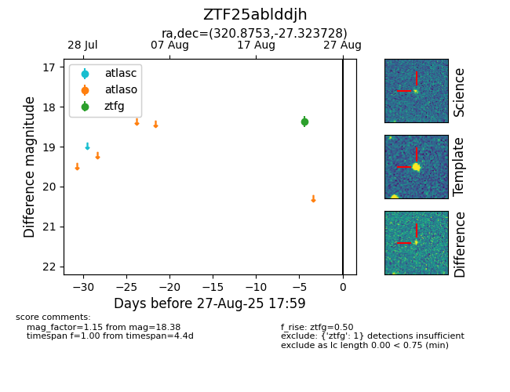

Target ZTF25ablddjh at 2025-08-27 17:59, see:
FINK: fink-portal.org/ZTF25ablddjh
Lasair: lasair-ztf.lsst.ac.uk/objects/ZTF25ablddjh
ALeRCE: alerce.online/object/ZTF25ablddjh
alt names
ZTF25ablddjh (ztf,fink)
coordinates:
equatorial (ra, dec) = (320.8753,-27.32373)
galactic (l, b) = (20.1319,-44.12878)
photometry
last ztfg=18.38
1 ztfg detections
